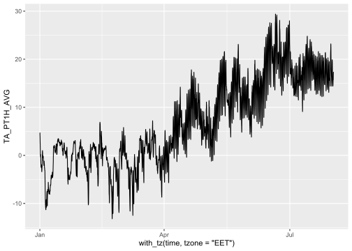

remotes::install_github("https://github.com/aphalo/fmi2",
ref = "HY2-develop")Introduction
The Finnish Meteorological Institute shares a large amount of data openly. One way of accessing observations from meteorological stations is through its open data web site. Data can be obtained both by manually downloading them or automatically using a computer program or script through calls to an API interface. Package ‘fmi2’ implements calls to some of the WPS API functions, allowing downloads directly from R.
The FMI also makes available climate data from 1961 to the present spatially interpolated to a 10 km x 10 km grid. However, I haven’t found an API to access the gridded data.
Monthly climatology for individual weather stations is also available. There are separate pages for each variable.
I find it convenient to use an R scrip to download weather data from FMI, but data can also be downloaded through FMI’s web pages. The scrip below caches a local copy of the data, and when run again appends the new data.
The FMI WPS API has limits to the amount of data that can be downloaded per query. In addition if we need to frequently retrieve fresh data from the same station or group of stations we can retrieve the missing data and append it to those previously downloaded instead of fetching again and again the same data. Of course if data changes retrospectively in the FMI service we will want to retrieve a fresh copy also of the older data.
Installing R package ‘fmi2’
The original version is available at (https://github.com/rOpenGov/fmi2).
An edited version that adds a function to retrieve solar radiation and a version of this file as a second vignette is available at (https://github.com/aphalo/fmi2). The package can be installed directly from GitHub with:
Its dependencies may need to be installed manually from CRAN.
Note
The documentation for the modified ‘fmi2’ package is available on-line and can be read without need to locally install the package.
Set up
library(fmi2)
library(dplyr)
Attaching package: 'dplyr'The following objects are masked from 'package:stats':
filter, lagThe following objects are masked from 'package:base':
intersect, setdiff, setequal, unionlibrary(sf)Linking to GEOS 3.11.2, GDAL 3.6.2, PROJ 9.2.0; sf_use_s2() is TRUElibrary(lubridate)
Attaching package: 'lubridate'The following objects are masked from 'package:base':
date, intersect, setdiff, unionlibrary(ggplot2)
library(ggpmisc)Loading required package: ggppRegistered S3 methods overwritten by 'ggpp':
method from
heightDetails.titleGrob ggplot2
widthDetails.titleGrob ggplot2
Attaching package: 'ggpp'The following object is masked from 'package:ggplot2':
annotateRegistered S3 method overwritten by 'ggpmisc':
method from
as.character.polynomial polynomWe can query by FMI station ID, for simplicity we set it here.
# ID code of the station from where we fetch data
stn_fmisid <- 101004 # Kumpula, change as needed, both weather and radiation
# stn_fmisid <- 101154 # Lammi, change as needed, only weather
starttime.char <- "2022-12-31 22:00" # UTC midnight in FinlandWe can query information about the station.
Downloading hourly data values
We store data locally in a file and if the file exists load and append to it the missing data between its end and “now”. We need to be careful with time zones!! It is simplest to use UTC for the data and only change the time zone for plotting.
::: To force the data to be retrieved again, we only need to delete the file we use to store it locally (or “cache”). :::
if (!file.exists("fmi-weather-data-wide.Rda")) {
# Used only once or when replacing all data
starttime <- ymd_hm(starttime.char, tz = "UTC")
wide_weather_data <- data.frame()
} else {
load("fmi-weather-data-wide.Rda")
# we start 59 min after end of previously downloaded data
starttime <-force_tz(max(wide_weather_data$time), tzone = "UTC") + minutes(59)
}
# endtime <- trunc(now(), units = "mins")
endtime <- starttime # do not read new data # we read the new data to a new dataframe
# (to avoid appending repeatedly to a long one)
new_wide_data <- data.frame()
while (starttime < endtime) {
sliceendtime <- starttime + days(28) # keep query size at max of 4 weeks
if (sliceendtime > endtime) {
sliceendtime <- endtime
}
stn_data <- obs_weather_hourly(starttime = as.character(starttime),
endtime = as.character(sliceendtime),
fmisid = stn_fmisid)
slice_data <- stn_data %>%
tidyr::spread(variable, value) %>%
# convert the sf object into a regular tibble
sf::st_set_geometry(NULL)
new_wide_data <- rbind(new_wide_data, slice_data)
starttime <- sliceendtime + minutes(1)
cat(".")
}
range(new_wide_data$time) # freshly readWarning in min(x, na.rm = na.rm): no non-missing arguments to min; returning
InfWarning in max(x, na.rm = na.rm): no non-missing arguments to max; returning
-Inf[1] Inf -Inf wide_weather_data <- rbind(wide_weather_data, new_wide_data)
range(wide_weather_data$time) # all data to be saved[1] "2022-12-31 22:00:00 UTC" "2023-08-01 12:00:00 UTC" colnames(wide_weather_data) [1] "time" "PA_PT1H_AVG" "PRA_PT1H_ACC" "PRI_PT1H_MAX"
[5] "RH_PT1H_AVG" "TA_PT1H_AVG" "TA_PT1H_MAX" "TA_PT1H_MIN"
[9] "WAWA_PT1H_RANK" "WD_PT1H_AVG" "WS_PT1H_AVG" "WS_PT1H_MAX"
[13] "WS_PT1H_MIN" save(wide_weather_data, file = "fmi-weather-data-wide.Rda")The description of the variables can be obtained from the server.
fmi2::describe_variables(colnames(wide_weather_data)[-1])# A tibble: 12 × 6
variable label base_phenomenon unit stat_function agg_period
<chr> <chr> <chr> <chr> <chr> <chr>
1 PA_PT1H_AVG Air pressure Air pressure hPa avg PT1H
2 PRA_PT1H_ACC Precipitation … Amount of prec… mm acc PT1H
3 PRI_PT1H_MAX Maximum precip… Amount of prec… mm/h max PT1H
4 RH_PT1H_AVG Relative humid… Humidity % avg PT1H
5 TA_PT1H_AVG Air temperature Temperature degC avg PT1H
6 TA_PT1H_MAX Highest temper… Temperature degC max PT1H
7 TA_PT1H_MIN Lowest tempera… Temperature degC min PT1H
8 WAWA_PT1H_RANK Present weathe… Weather <NA> rank PT1H
9 WD_PT1H_AVG Wind direction Wind deg avg PT1H
10 WS_PT1H_AVG Wind speed Wind m/s avg PT1H
11 WS_PT1H_MAX Maximum wind s… Wind m/s max PT1H
12 WS_PT1H_MIN Minimum wind s… Wind m/s min PT1H ggplot(wide_weather_data, aes(with_tz(time, tzone = "EET"), TA_PT1H_AVG)) +
geom_line()
Downloading radiation data at 1 min
The station ID was set above, and we use it again. However, FEW WEATHER STATIONS measure radiation! e.g., Kumpula does, but Lammi does not.
if (!file.exists("fmi-sun-data-wide.Rda")) {
# Used only once or when replacing all data
starttime.char <- "2023-01-15 22:00" # UTC at midnight in Finland
starttime <- ymd_hm(starttime.char)
wide_sun_data <- data.frame()
} else {
load("fmi-sun-data-wide.Rda")
# we start 1 h after end of previously downloaded data
starttime <- max(wide_sun_data$time) + minutes(1) + hours(2) # convert to UTC + 2h
}
# endtime <- trunc(now() - minutes(30), units = "mins")
endtime <- starttime # do not read new data# we read the new data to a new dataframe
# (to avoid appending repeatedly to a long one)
new_wide_data <- data.frame()
while (starttime < endtime) {
sliceendtime <- starttime + days(1) # keep query size at max of 1 week
if (sliceendtime > endtime) {
sliceendtime <- endtime
}
stn_data <- obs_radiation_minute(starttime = as.character(starttime),
endtime = as.character(sliceendtime),
fmisid = 101004)
slice_data <- stn_data %>%
tidyr::spread(variable, value) %>%
# convert the sf object into a regular tibble
sf::st_set_geometry(NULL)
new_wide_data <- rbind(new_wide_data, slice_data)
starttime <- sliceendtime + minutes(1)
cat(".")
}
range(new_wide_data$time)Warning in min(x, na.rm = na.rm): no non-missing arguments to min; returning
InfWarning in max(x, na.rm = na.rm): no non-missing arguments to max; returning
-Inf[1] Inf -Infwide_sun_data <- rbind(wide_sun_data, new_wide_data)
range(wide_sun_data$time)[1] "2023-01-15 22:00:00 UTC" "2023-06-29 20:57:00 UTC"colnames(wide_sun_data) [1] "time" "DIFF_1MIN" "DIR_1MIN" "GLOB_1MIN" "LWIN_1MIN"
[6] "LWOUT_1MIN" "NET_1MIN" "REFL_1MIN" "SUND_1MIN" "UVB_U" save(wide_sun_data, file = "fmi-sun-data-wide.Rda")fmi2::describe_variables(colnames(wide_sun_data)[-1])# A tibble: 9 × 6
variable label base_phenomenon unit stat_function agg_period
<chr> <chr> <chr> <chr> <chr> <chr>
1 DIFF_1MIN "Diffuse radiation" Solar radiation W/m2 avg PT1M
2 DIR_1MIN "Direct solar radia… Solar radiation W/m2 avg PT1M
3 GLOB_1MIN "Global radiation" Solar radiation W/m2 avg PT1M
4 LWIN_1MIN "Long wave solar ra… UV radiation W/m2 avg PT1M
5 LWOUT_1MIN "Long wave outgoing… UV radiation W/m2 avg PT1M
6 NET_1MIN "Radiation balance" Solar radiation W/m2 avg PT1M
7 REFL_1MIN "Reflected radiatio… Solar radiation W/m2 avg PT1M
8 SUND_1MIN "Sunshine duration" Sunshine durat… s acc PT1M
9 UVB_U "Ultraviolet irradi… UV radiation index avg PT1M ggplot(wide_sun_data, aes(with_tz(time, tzone = "EET"), GLOB_1MIN)) +
geom_line()